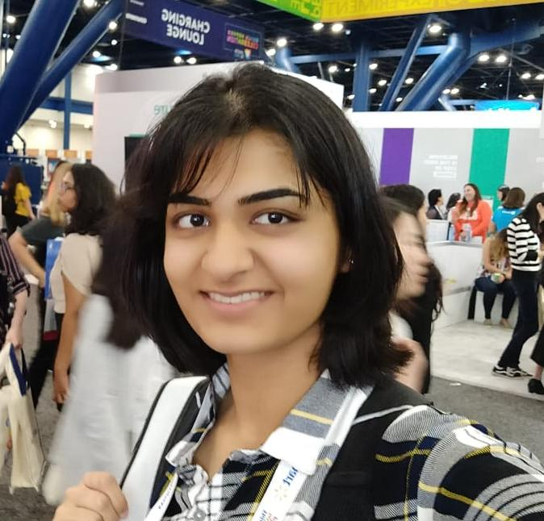

I am a first year PhD student at the University of Wisconsin-Madison, where I work with Prof Sharon Li and Prof Junjie Hu on building robust and reliable language models. Prior to this, I was a Machine Learning Researcher at Goldman Sachs CoreAI, where I worked on information extraction from text in the financial domain.
My primary area of interest lies in developing algorithms in domains with low supervision, and making neural networks learn meaningful representations aligned with human understanding. To this end, I have delved into Transfer Learning, Domain Adaptation, Few Shot Learning, Active Learning and the open ended world of Interpretability. Apart from this, I have worked on Deep Learning applied to NLP and Vision tasks, and have thoroughly enjoyed the experience.
I completed my Masters in Computer Science at UMass Amherst, where I worked in the Information Extraction and Synthesis Lab under Prof Andrew McCallum, and in the Information Fusion Lab under Prof Madalina Fiterau. I started my journey of research as an undergraduate, under the wonderful guidance of Prof Balaraman Ravindran at IIT Madras, where I worked on Object Tracking and Classification in video data. I was introduced to the world of Machine Learning by Prof Emma Brunksill at the OurCS Workshop at CMU.
You can find my single page Resumé here, or a more detailed CV here.